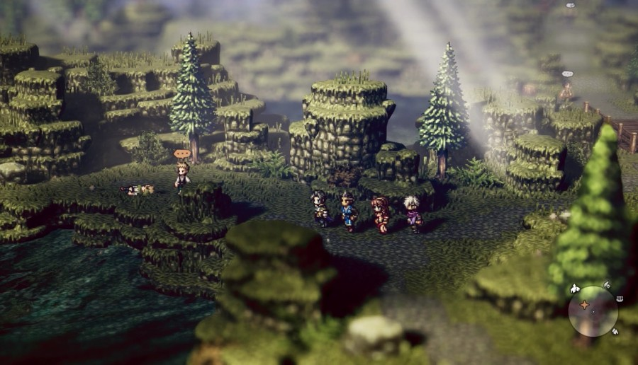
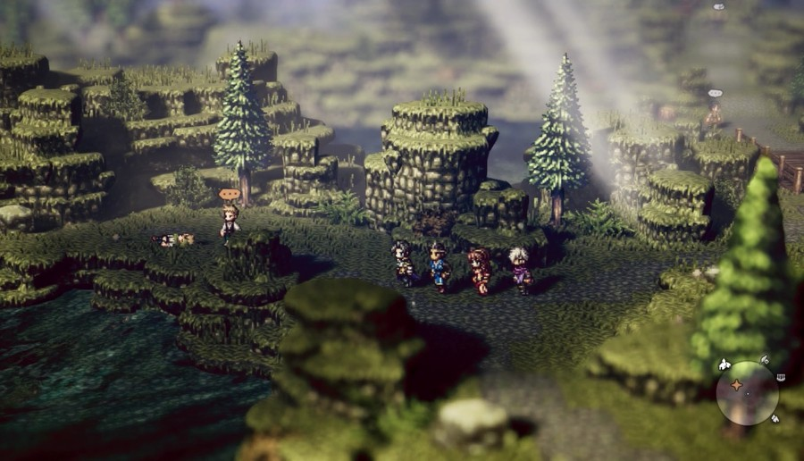

Publishing Info
- Published by: Square Enix/Nintendo
- Developed by: Square Enix Business Division 11
- Released: July 13, 2018
Description
Octopath Traveler is a single-player JRPG in which you control one of eight characters,
each with a unique class, and guide them throughout their story.
On the way, you can find the rest of the characters, add them to your party, and play through
their stories as well. It also features a graphical style combining
2D sprite art and 3D models known as "HD-2D", a deep battle system, and a very well-recieved
soundtrack composed by Yasunori Nishiki.
 

Game Categories
- Genre: Role-Playing
- No. of players: 1
- Platforms: Nintendo Switch, PC, Google Stadia, Xbox One
Review Excerpt
The biggest difference between Octopath Traveler and other traditional JRPGs is the noticeable lack of a central narrative. While it's still a far cry from the
open worlds of many popular RPGs from the West,its freeform, open-ended storyline is definitely evocative of the storytelling methods used by that genre.
This gives the game a lot of room to set its own unique pace, and that almost always plays to its favour.